In this exercise, you will learn to make an LED matrix using Tinkercad and an Arduino Microcontroller. This will begin with a review of the material covered in What is Engineering Fall 2024. After that we will create a 3x3 LED Matrix, and learn how to program it. We will then scale it up to a 4x4 LED Matrix. Finally, we will replace this with a 4x4 RGB LED Matrix. Time permitting, you will see if you can design an interesting light show using the 3x3 matrix.
Software Systems Engineering - High School Mentorship Exercise
University of Regina - Engineering and Applied Science - Software Systems Engineering
Lab Instructor: Adam Tilson
In this exercise, we will simulate embedded systems using TinkerCad. Please join the classroom here:
https://www.tinkercad.com/joinclass/ZPAFNAYAG
And use the nickname pcx, where x is the station number of your machine. e.g. pc1.
After that go to classes -> mentorship -> wie
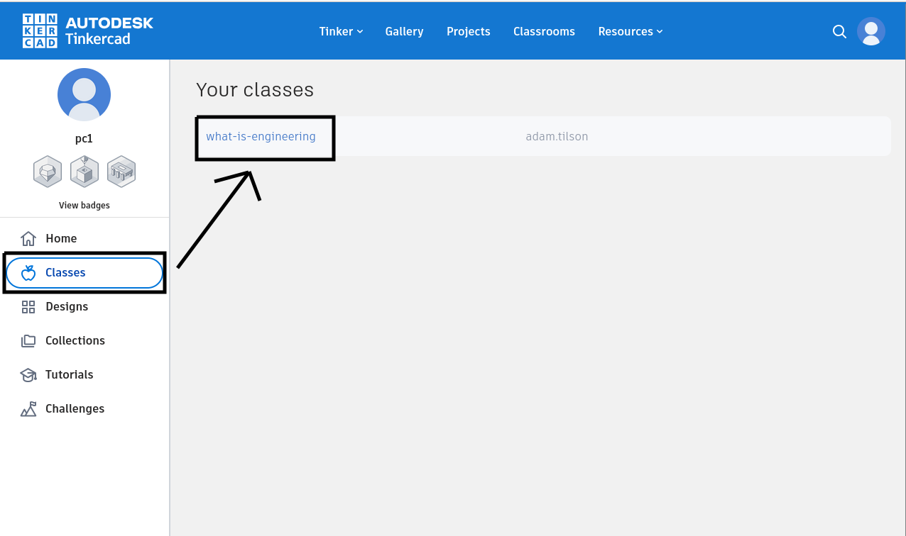
Then do a Copy and Tinker of the starting circuit.
We will work on this project in phases, if you fall behind the next phase should be avaialable for you to Copy and Tinker, and then you will be caught up!
Arduino Microcontoller
Our project is going to be simulated using the Arduino Uno R3 microcontroller board. This is a popuar hobbyist board which allows building simple circuits and programming them using logic.
To begin, identify the two lines of pins on each side of the microcontroller. These are places where wires can be attached.
To begin let’s create a very simple circuit with the following
5V pin -> 330 Ohm resistor -> LED anode -> LED cathode -> GND (any ground pin will work fine.)
- You can add components to TinkerCad by dragging them from the right pane
- add a resistor
- add an LED
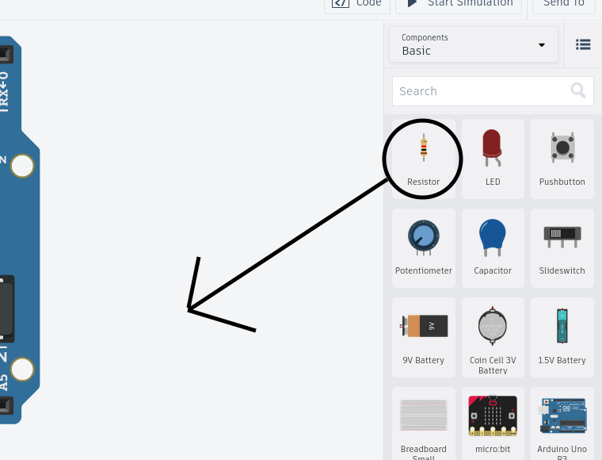
- You can modify some properties of devices by clicking on them, and then changing values in the popup
- use this to change the resistor value to 330 Ohms

- You can add wires to your circuit by dragging from pin ports to terminals on devices
- You can change the colors of wires in the upper left, by convention it is a good idea to use black wires for ground wires, and red wires for the higher voltages

Turn it on!
- You can run your simulation using the start simulation button at the top.
- If you wired it correctly, your light will be on.
- If the light is not on
- check that the LED was not installed backwards
- check that resistor’s resistance (Ohms) is set correctly
- check that all wires are connected
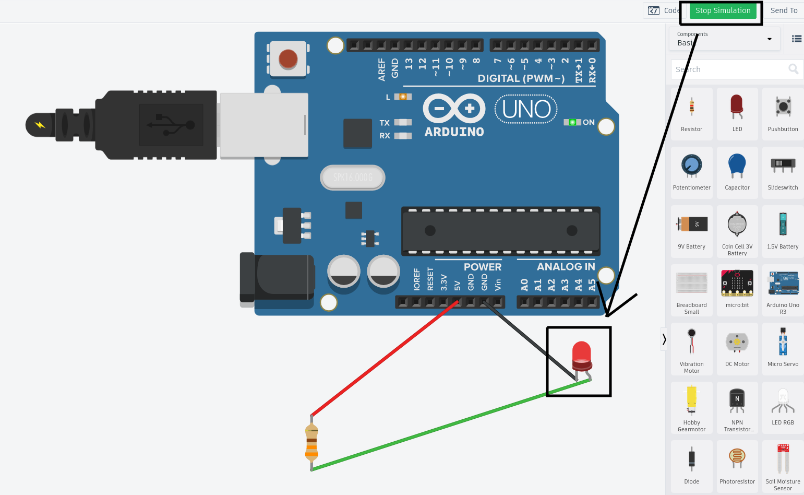
Adding a breadboard
Unfortunately just having components floating around in space is not useful. For this reason we use a breadboard.
These series of holes are actually connected in two ways - rails along the sides, and two chunks of connected columns, as in the following diagram:
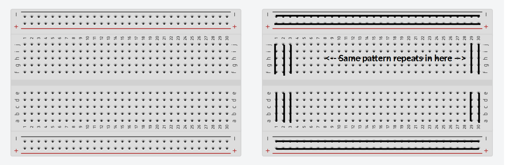
With this we can rebuild our circuit using the breadboard.
Note - it is usually a good idea to first connect both sides of the rails and grounds to power
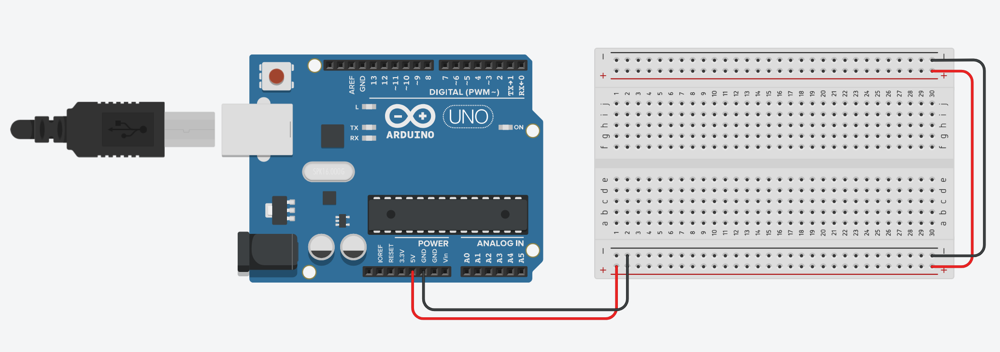
Hint: You can make tidy wires by clicking to add a bend.
Add back in your resistor and led, with a few little jump wires and you are done. Run it to see that it still works:

So far, our microcontroller is only acting like a power source - the same could be accomplished with a few batteries! Let’s modify our circuit so that we can actually control the state of the LED with the microcontroller
Note, you can pick up here by “Copy and Tinker” the phase-1-checkpoint circuit.
Remove the wire from the anode of the LED, and replace it with a wire going to Pin 1 of the microcontroller. Now, we can control the volate on this side through code. Open up the code editor of TinkerCad.
We will use the blocks system to start, similar to languages like Scratch.
Let’s start by simply making our light turn on:

But we can do much more than this, we can also make our light blink, by modifying the code:
Hint: You can find the wait instruction under control
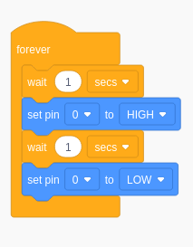
Next let’s modify the circuit so that we have a button, and when the button is pressed it controls the circuit:

Hints:
- The new component is called a pushbutton
- It’s terminals are on the four corners, pay attention to which columns they are in!
- Set the switches resistor to 10K Ohm.
- Connect one side directly to the ground rail
Modify your code to the following:

If everything is working correctly, at this point you can press the button, and when pressed the light will turn on.
From here on out, we will be using the files in the Activity called Mentorship, so you can switch over to there if needed!
Create a new circuit, and create the following diagram.
Hint: The resisters are 220 Ohm.
Hint: The RED wires will connect to each terminal of the devices in a row.
Hint: The Black wires will connect to each terminal of the devices in a column.
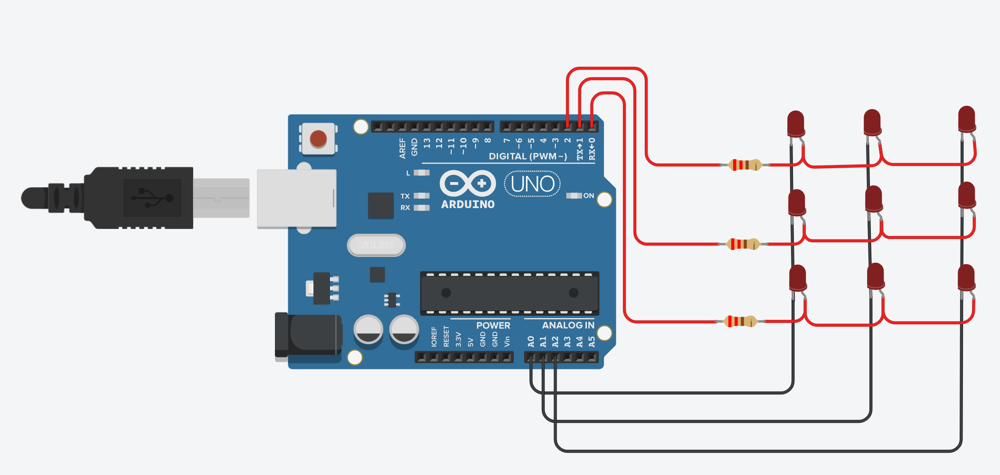
If can be handy to label our connections as well so we know which wire is which at a glance, using the commenting tool in the toolbar:
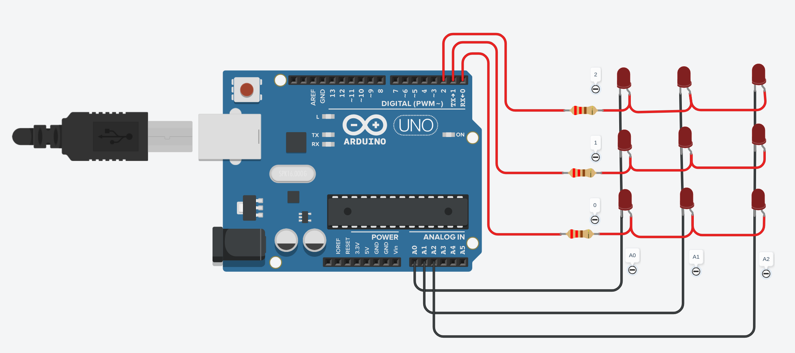
Let’s visualize a grid system for our pins, with an X and Y axis.
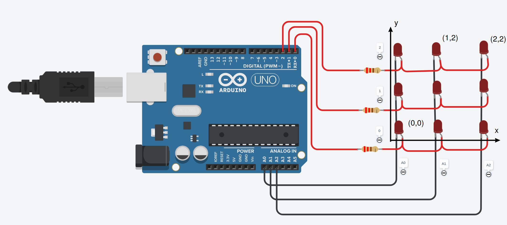
Turning on just one LED
Let’s say our goal was to turn on only the pin at 0,0. (lower left).
To begin with, let’s make each of our pins A0, A1, A2, 0, 1 and 2 low.
We want our Anode of this LED to be High, which is connected to 0. We want our Cathode of this LED to be Low, which is connected to A0.
- So, if we set 0 to high and A0 to low, we should be all good, right? (hint: not right!)
- Let’s try it and see!
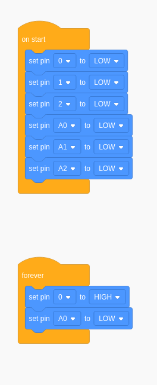
What actually happens?
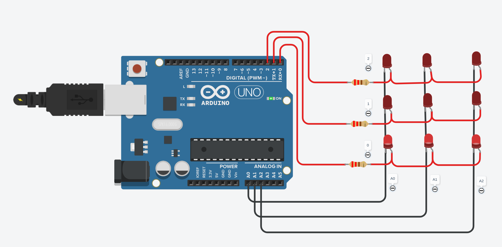
So the entire bottom row is on. Why might that be? Because if we think about it, all of the LEDs on the bottom row have a HIGH value at the anode, and a LOW value at the cathode. So they are all ON!
Recall that current down not flow if both sides of a device are LOW, or both sides of a device are HIGH. Also recall that current can only flow one direction through an LED from Anode to Cathode.
In order to make this not the case, we will need to set the cathodes of the second and third LEDs in this row to HIGH. Note that these are connected to A1 and A2.
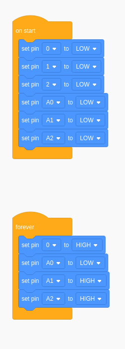
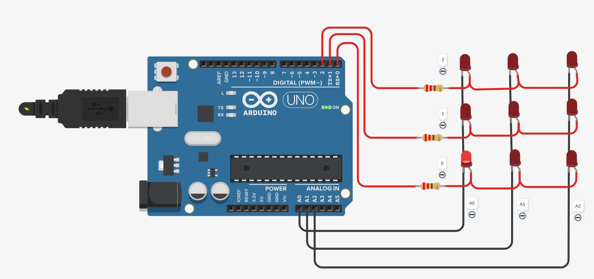
Here is the overall logic to what is happening here:
Moving forward Blocks are going to be too slow. Let’s switch to C++.
// C++ code
//
void setup()
{
pinMode(0, OUTPUT);
pinMode(1, OUTPUT);
pinMode(2, OUTPUT);
pinMode(A0, OUTPUT);
pinMode(A1, OUTPUT);
pinMode(A2, OUTPUT);
digitalWrite(0, LOW);
digitalWrite(1, LOW);
digitalWrite(2, LOW);
digitalWrite(A0, LOW);
digitalWrite(A1, LOW);
digitalWrite(A2, LOW);
}
void loop()
{
digitalWrite(0, HIGH);
digitalWrite(A0, LOW);
digitalWrite(A1, HIGH);
digitalWrite(A2, HIGH);
delay(10); // Delay a little bit to improve simulation performance
}
Turning on a single pin is quite useful. Let’s create a function so that we can turn on the pin at (0,0), and then call this function:
// C++ code
//
void setup()
{
pinMode(0, OUTPUT);
pinMode(1, OUTPUT);
pinMode(2, OUTPUT);
pinMode(A0, OUTPUT);
pinMode(A1, OUTPUT);
pinMode(A2, OUTPUT);
}
void loop()
{
turn_on_led_0_0();
delay(10); // Delay a little bit to improve simulation performance
}
void turn_on_led_0_0(){
digitalWrite(A0, LOW);
digitalWrite(A1, HIGH);
digitalWrite(A2, HIGH);
digitalWrite(0, HIGH);
digitalWrite(1, LOW);
digitalWrite(2, LOW);
}
We could write similar functions for turning on led_0_1 and led_1_2
void turn_on_led_1_0(){
digitalWrite(A0, HIGH);
digitalWrite(A1, LOW);
digitalWrite(A2, HIGH);
digitalWrite(0, HIGH);
digitalWrite(1, LOW);
digitalWrite(2, LOW);
}
void turn_on_led_2_1(){
digitalWrite(A0, HIGH);
digitalWrite(A1, HIGH);
digitalWrite(A2, LOW);
digitalWrite(0, LOW);
digitalWrite(1, HIGH);
digitalWrite(2, LOW);
}
So if you can only have on one LED at a time, how can we ever light up multiple at the same time?
Well, it’s easy enough to blink between two of them every second:
void loop() {
turn_on_led_0_1();
delay(1000);
turn_on_led_1_2();
delay(1000);
}
Note the little flash on (1,1) and (2,1)? This is because when we set and clear pins, for tiny instants the LEDs are on. This is called ghosting, and for now, we will consider this is an acceptable behavior, but in the real world there are methods for dealing with it.
Let’s flash between them faster:
void loop() {
turn_on_led_0_1();
delay(100);
turn_on_led_1_2();
delay(100);
}
Faster!
void loop() {
turn_on_led_0_1();
delay(10);
turn_on_led_1_2();
delay(10);
}
Full speed ahead!
void loop() {
turn_on_led_0_1();
delay(1);
turn_on_led_1_2();
delay(1);
}
At this point it basically looks like 2 lights are on all the time! (Note that the ghosting also causes two other lights to appear as if they are almost on.)
Note that this code is not very flexible. It would be much nicer if we could just turn on any pin with a single function. This prompts the idea of having functions with arguments. This may seem a bit tricky, but bare with me, we’ll discuss it together:
int NUM_X_PINS = 3;
int X_PIN_NAMES [] = {A0, A1, A2};
int NUM_Y_PINS = 3;
int Y_PIN_NAMES [] = {0,1,2};
void turn_on_led(int x, int y) {
for (int xi = 0; xi < NUM_X_PINS; xi++){
if (xi == x){
digitalWrite(X_PIN_NAMES[xi], LOW);
} else {
digitalWrite(X_PIN_NAMES[xi], HIGH);
}
}
for (int yi = 0; yi < NUM_Y_PINS; yi++){
if (yi == y){
digitalWrite(Y_PIN_NAMES[yi], HIGH);
} else {
digitalWrite(Y_PIN_NAMES[yi], LOW);
}
}
}
Update your loop functions as follows:
void loop() {
turn_on_led(1,0);
delay(1);
turn_on_led(2,1);
delay(1);
}
Everything should still work fine! Here are some comments on what we are doing:
// contant integer variables describing the number of pins in each direction
int NUM_X_PINS = 3;
int NUM_Y_PINS = 3;
// constant integer arrays referring to which pins those are connected to
int X_PIN_NAMES [] = {A0, A1, A2};
int Y_PIN_NAMES [] = {0,1,2};
// function arguments specify the pin we wish to turn on
void turn_on_led(int x, int y) {
// loop over each pin in our set of pins for x
for (int xi = 0; xi < NUM_X_PINS; xi++){
// if this is the pin we wish to turn on
if (xi == x){
// make that pin name LOW
digitalWrite(X_PIN_NAMES[xi], LOW);
} else {
// else make it high
digitalWrite(X_PIN_NAMES[xi], HIGH);
}
}
// ditto for the y pins
for (int yi = 0; yi < NUM_Y_PINS; yi++){
if (yi == y){
// except the logic is reversed
digitalWrite(Y_PIN_NAMES[yi], HIGH);
} else {
digitalWrite(Y_PIN_NAMES[yi], LOW);
}
}
}
Why is this type of refactor awesome? For two reasons - it separates the actual pins from the code using the _PIN_NAMES variables, and it also allows changing the number of total pins for each grid. In fact, we don’t even need to have square grids!
If you move your constants to the top, you can even use this for the initial setup for the pins:
int NUM_X_PINS = 3;
int NUM_Y_PINS = 3;
int X_PIN_NAMES [] = {A0, A1, A2};
int Y_PIN_NAMES [] = {0,1,2};
void setup()
{
for (int xi = 0; xi < NUM_X_PINS; xi++){
pinMode(X_PIN_NAMES[xi], OUTPUT);
}
for (int yi = 0; yi < NUM_Y_PINS; yi++){
pinMode(Y_PIN_NAMES[yi], OUTPUT);
}
}
CHALLENGE: Upgrade your circuit to a 4x4 grid. Turn on all of the pins in the diagonal like /.
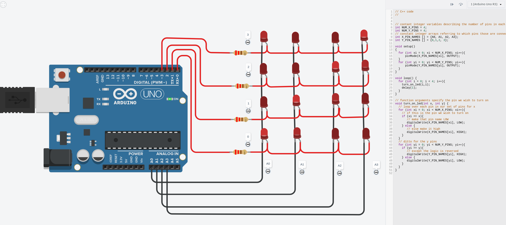
An RGB LED is similar to an ordinary LED, except it has 3 terminals, one for RED, GREEN and BLUE.
If that terminal has a high signal, then it will shine that color.
If it has a combination of signals, it will create a color which blends the two according to the principles of light:
- RED + GREEN = YELLOW
- RED + BLUE = MAGENTA
- GREEN + BLUE = CYAN
Here is the completed project. You probably don’t want to wire this from scratch!
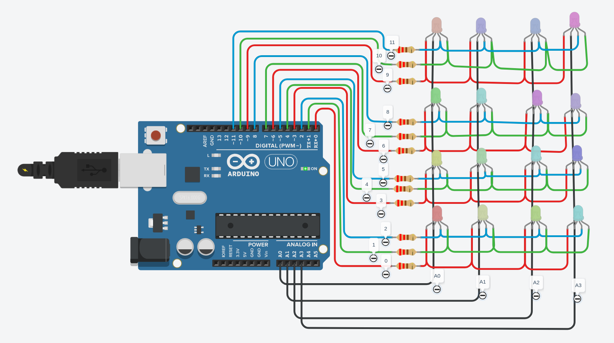
You can grab this from the class files!
The code is more complicated, but not significantly more. I’ve added a third arguement to the function which allows you to specify the color you would like the pixel to be:
void turn_on_led(int x, int y, bool red, bool green, bool blue) {
for (int xi = 0; xi < NUM_X_PINS; xi++){
if (xi == x){
digitalWrite(X_PIN_NAMES[xi], LOW);
} else {
digitalWrite(X_PIN_NAMES[xi], HIGH);
}
}
for (int yi = 0; yi < NUM_Y_PINS; yi++){
if (red && yi == y){
digitalWrite(Y_R_PIN_NAMES[yi], HIGH);
} else {
digitalWrite(Y_R_PIN_NAMES[yi], LOW);
}
if (green && yi == y){
digitalWrite(Y_G_PIN_NAMES[yi], HIGH);
} else {
digitalWrite(Y_G_PIN_NAMES[yi], LOW);
}
if (blue && yi == y){
digitalWrite(Y_B_PIN_NAMES[yi], HIGH);
} else {
digitalWrite(Y_B_PIN_NAMES[yi], LOW);
}
}
}
You can call this argument either manually specifying three boolean values:
turn_on_led(0,0,true,false,false);
Or by using one of the defines I included at the top:
#define RED true,false,false
#define GREEN false,true,false
#define BLUE false,false,true
#define CYAN false,true,true
#define YELLOW true,true,false
#define MAGENTA true,false,true
e.g.
turn_on_led(0,0,RED);
I have several demos of things you can do with the screen. Build off of this to see if you can make your own RGB lightshow or screensaver!